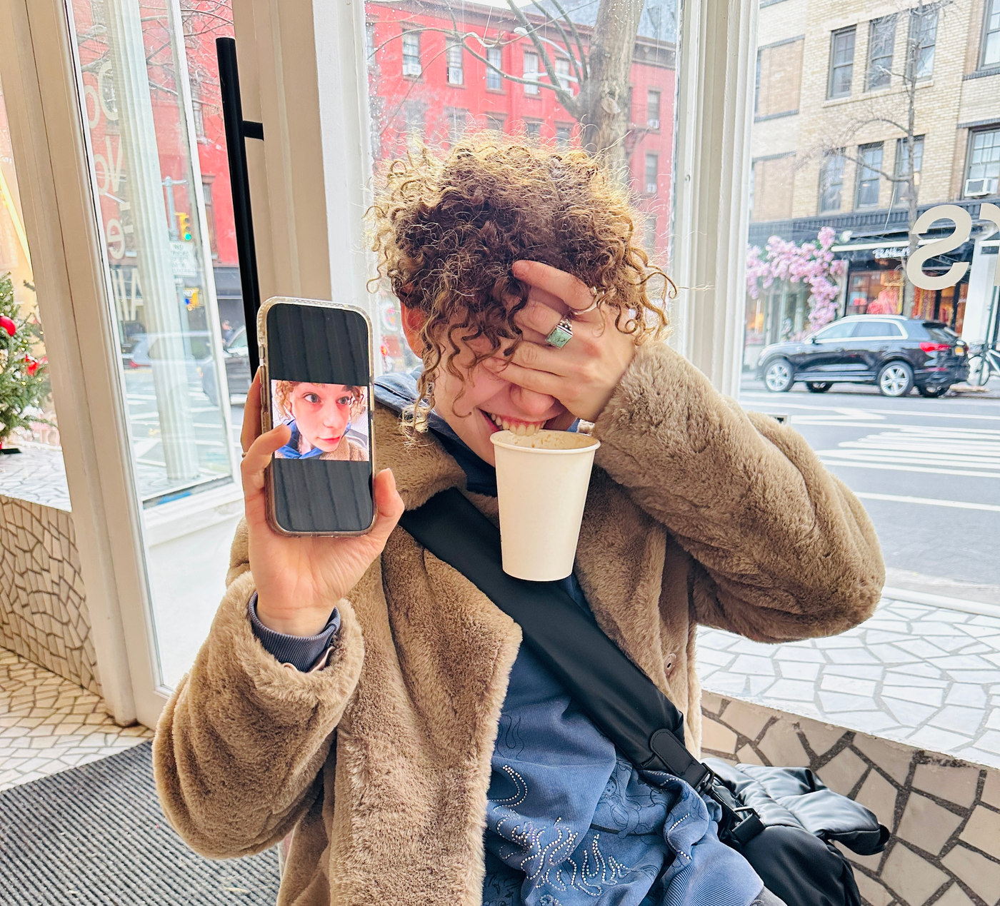
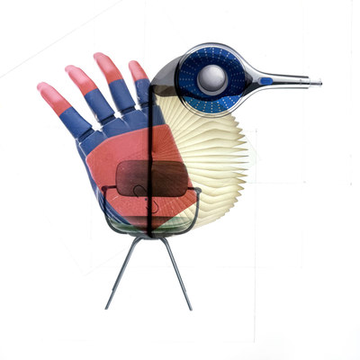
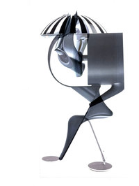

I am a student at Carnegie Mellon University School of Design, studying experiential design with minors in Product Management and HCI. I am interested in visual identity, product design, branding, advertising, and experiential marketing. I see design as creative problem-solving and enjoy helping clients find creative solutions to their needs. In my free time, I love to read, cook, boulder, play volleyball, travel, and get lost in museums.
I am always looking for opportunities to
learn and collaborate. Please get in touch.
- Emma Gelman


BACK